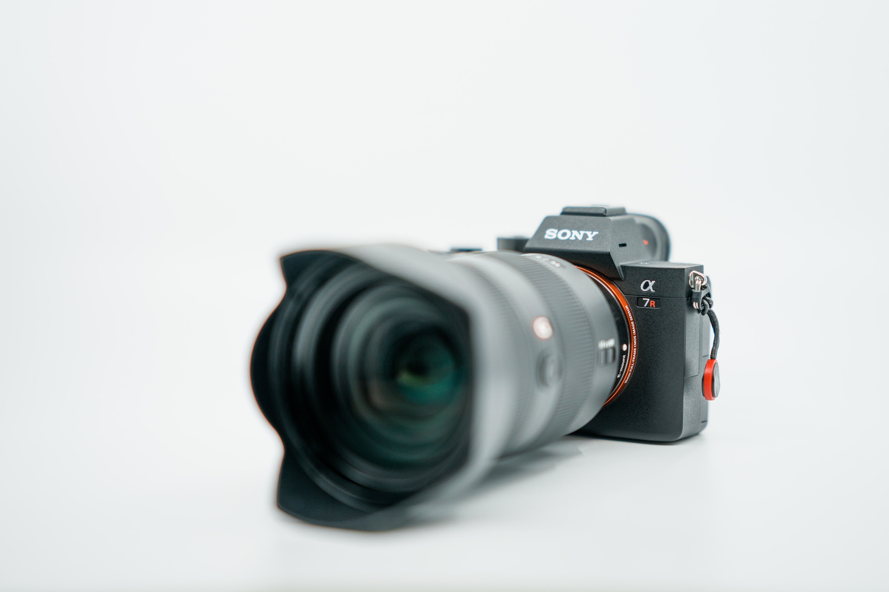
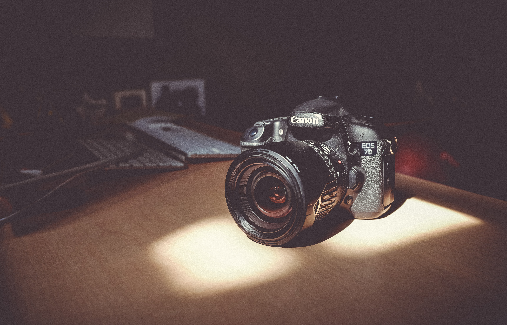

DSLR or Mirrorless?
Read more
Despite buying cameras which have been specifically designed to take and make use of different lenses, a large number of photographers only ever use the kit lens that their DSLR or interchangeable lens camera came with. But it's really not that surprising, picking the right next lens can be daunting, which is why we're going to try to help with our guide to life after the kit lens. Lenses are arguably the most important part of your camera set-up, they make or break your pictures. They control the image that's projected onto your imaging sensor, and ultimately what photos you are taking home. As such, many photographers would prefer to shoot with an okay camera and a great lens, than a great camera with ho-hum glass attached. But knowing the importance of good glass is one thing, it's another to know what lens will give you the creative freedom to capture the photos you want to get. To the uninitiated, lenses are baffling tubes of glass with numbers and confusing acronyms printed on the side. Hopefully, this guide will help you understand which lenses can be used to achieve what, why others can cost more than a family car … and how there are some sub $150 bargains which could change your photography forever. If you currently only have the kit lens your camera came with, the short answer to this question is that as soon as you have the cash available, you should go out and get a fast normal prime lens or a telephoto zoom. The longer and more considered answer is that you need to think about the type of photographs you currently take. You need to understand how different lenses could improve your current photos and allow you to take ones that you currently can't. If that all sounds a bit confusing, read on. When you're on holiday or traveling, you probably don't want to be lugging several lenses and cameras around with you – unless you're the most dedicated of photographers, that is. It's often the same if you're trying to enjoy a day with the family and don't want to spend all day changing lenses and moaning about your back. As such, a good all-day or travel lens would be one that was easy enough to carry around, but still offered you the freedom to capture shots from landscapes to portraits, and zoom in on distant objects. For Micro Four Thirds shooters, that could be something like the Panasonic Lumix G Vario 14-140 mm f/3.5-5.6, or the AF-S DX NIKKOR 18-200 mm f/3.5-5.6G ED VR II if a DX Nikon is your DSLR or choice. Street photography can be done with almost any lens, though a 300 mm F2.8 might raise a few eyebrows from your subjects. However, a focal range of around 35-50 mm is often seen as the ideal for capturing the moment in urban areas. Unless you want all of your subjects looking directly at the camera, you'd probably be best served by something discrete. It's also important that street photography lenses feature a fast maximum aperture for lower-light situations. This means that something like the Fuji XF 23 mm f1.4 R Lens would be a great selection. The Sigma 35 mm F1.4 DG HSM has also been very well received by many DSLR street shooters.